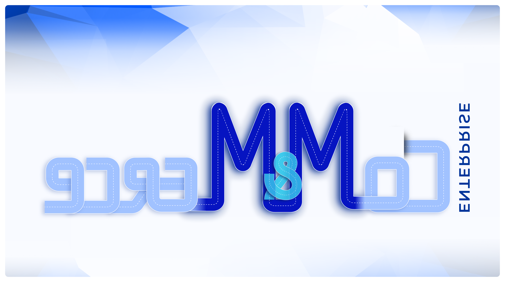

Side Project — Visual Storytelling
Moments & Metrics — Communicating Impact to Leadership
A strategic communication framework that maps critical journey moments to business signals and measurable outcomes — designed to frame effort-to-impact narratives for leadership audiences across hackathons and readouts.
Moments-and-Metrics (MnM) Thinking
Most hackathon demos tell a story about what was built. MnM thinking flips this — it starts with the moments that matter in a user’s journey and maps each one to a business signal and a success metric.
The framework identifies critical journey moments where solutions create disproportionate value. Each moment is mapped to three layers:
- User benefit — what changes for the person doing the work
- Business signal — what this means for revenue, efficiency, or scale
- Success metric — how we know it worked
The MnM framework became a go-to tool for hackathon demo storytelling and leadership readouts — turning prototype demos into revenue-aware narratives that executives could act on.

How MnM Was Applied
Reframed hackathon presentations from feature walkthroughs into moment-driven narratives. Each demo anchored its value proposition in real enterprise commerce workflows, not hypotheticals.
Used MnM timelines to communicate effort-to-impact stories to senior leadership — connecting design decisions to revenue enablement, cost avoidance, and operational efficiency.
Visualised effort-to-impact-to-outcome flows using Sankey-style diagrams, making complex value chains legible at a glance for executive audiences.
Every concept was framed not just as a prototype, but as a leadership-ready, revenue-aware solution — connecting design craft to business outcomes.
“The gap between a great prototype and a funded initiative is often not the idea — it’s the narrative. MnM thinking bridges that gap by making impact visible before it’s measured.”